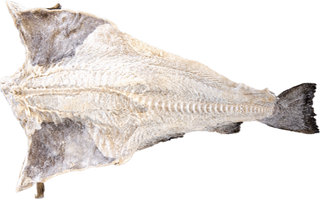

I'm a 20 year old woman with an interest in game development and related fields, like software development. I have experience contributing to some projects.
I currently plan to study and intern in IT, and hopefully (officially) study CompSci or Software Engineering. I'm very capable of learning things on my own, in fact I'd say my adaptability is something I'm quite proud of, but it is a dream of mine.
I've had interest in all things computer since.. well since I can remember, really. I grew up around them, with good ol Windows 7, sometimes XP. Kinda made me a linux nerd later on.
But anyways, my interest in game development has existed since I was around 11. I learned the basics of programming in Lua, and then used Unity Engine for a few years, eventually gaining an interest in the SM64 community and related N64 communities.

I'm well versed in game development and graphics, specializing in N64 but also capable of using modern frameworks and engines.

As a developer for F3D and SM64 side, along with the experimental renderer (OpenGL)!
As the translator for Portugual Portuguese.
